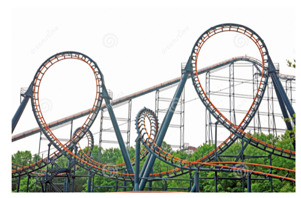
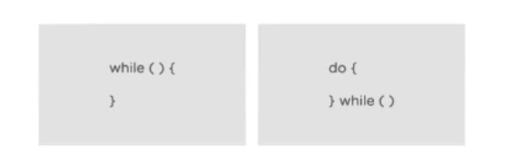
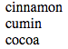

Javascript loops
Introduction to Loops
Loops are a concept that is fundamental to computer science.
They provide a way to repeat the same set of actions over and over again. These actions can repeat a certain number of times, or until a certain condition is met.
Introduction to Loops
For example, you would use loops when creating a list of 100 random numbers, displaying 20 photos downloaded from a photo sharing website like Flickr, or repeatedly popping up a prompt dialog until a visitor correctly enters an answer to a quiz question.
Race track example
Loops
There are many different ways to create loops in JavaScript (and other programming languages).
We will be focusing on “while” and “for” loops.
Reviewing Conditionals
A while statement repeats a section of code over and over again as long as some condition is true.
Remember conditional statements (aka if/else)?
A basic conditional statement looks like this:
if ( condition ) {
//code that runs if condition is true
}
else {
//code that runs if condition is false
}
Inside the parentheses goes a condition. If the condition is true, then the code inside the code block runs.
Reviewing Conditionals
Conditional statement example:
if (name === "Jeremy") {
alert("Hey, I know you!");
else {
alert("Who are you?");
}
‘While’ loops are very similar!
While Loops Syntax
while (a condition) {
//code goes here that runs if and while it is true
}
A condition also goes inside this set of parenthesis but instead of the code inside the block only running once when the condition is true, it runs over and over, and over again as long as the condition is true.
No semicolon after the final brace (because the code will be repeating!)
Horse Race Example
We want the horses to go around the track 10 times and log it each time they pass the counter.
var counter = 0;
while (counter < 10) {
counter += 1;
document.write(counter);
}
We can easily make counter < 1,000!
Loops
What’s the difference between a while loop and a conditional statement?
IF music plays, I will do a dance. AND
WHILE music is playing, I will continue dancing.

What's wrong with this loop?
var num = 0;
while (num > 20 ) {
alert(num);
num += 1;
}
JSBin
You will create a while loop that prints to the document 26 times. Create a variable named count, use it to track the number of times the loop runs. Don't forget to use the document.write() method inside the loop.
Important Notes
You don't always need to use a counter or specify an exact number of times that a loop must run.
All you need is a condition that at some point evaluates to false, so the loop can end.
Important Notes
The condition is evaluated BEFORE the loop. That means, if the condition is not true at the beginning, the loop will never run.
You always need a way to break OUT of the loop (aka, the condition needs to be false at some point). Something has to change inside of the loop to stop it from running. Otherwise, you will be stuck in an endless loop and your browser can crash.
Exercises
1. Use a while loop to add up the numbers 1 to 20. Console log the total.
2. Use a while loop to print out the even numbers from 1 to 20.
Hacking
Say you are a code breaker and you want your computer to guess the random number between 1 and 10000 that another computer is generating.
- First, we need to generate a random number from 1 to 10000. This is the number the computer needs to guess.
- Two, we'll enter a while loop that the computer will use to guess the random number.
- If the number the computer guesses matches the number generated at the beginning of the program, then the loop ends.
- If not, the loop continues until the correct number is guessed by the computer. (At which point, we exit the loop and print the random number and the number of times it took the computer to guess it.)
Hacking Part 2
The code we want to write opens a prompt, asks for a password, and writes to the document. Something is missing. Add a while loop, so that a prompt keeps appearing until the user types "sesame" into the prompt.
var secret = prompt("What is the secret password?");
//Your code here
document.write("You know the secret password. Welcome.");
The Do While Loop
This loop is very similar to the while loop. It executes the code in the code block over and over again as long as the condition is true.
The one key difference is that the do while loop will always execute the code block at least once. The condition isn’t tested until after the code block runs once.
Do While
do {
//code block
} while ( the condition )
Example:
You pop open a prompt dialog and ask for a user's email address. If the user types “haha, I'm not gonna tell you”, you might want to pop open the prompt a second time and ask for the email address. In fact, you might want to pop open that prompt over and over again until the user types in a valid email address.
In other words, you want to run a loop at least once to ask for a response but maybe more times as well, until the correct answer is supplied.
Example
Given the code below, what will print out to the console?
do {
console.log('Hello');
} while (false)
console.log(‘Goodbye’);
White Board Challenge
How would we change the following code to have a do while loop instead of a while loop?
var secret = prompt("What is the secret password?");
while ( secret !== "sesame" ) {
secret = prompt("What is the secret password?");
}
document.write("You know the secret password. Welcome.");
Explain this code
var maxNumber = 10000;
var numberToGuess = getRandomNumber(maxNumber);
var ourGuess;
var attempts = 0;
function getRandomNumber(maxNumber) {
return Math.floor(Math.random() * maxNumber) + 1; }
while (ourGuess !== numberToGuess) {
ourGuess = getRandomNumber(maxNumber);
attempts += 1; }
document.write("<p>The random number was " + numberToGuess +
". It took the computer " + attempts + " tries to get it right.</p>");
Song Exercise
Hint: Be mindful of infinite loops. They will crash your browser!
- Ask the user how many verses they want to hear.
- Write code that console logs the "Bottles of Sprite on the wall" song:
- How would you fix "1 bottles of Sprite"?
- How would you change "0" to "No more"?
10 bottles of Sprite on the wall,
10 bottles of Sprite!
Take one down and pass it around,
9 bottles of Sprite on the wall!
For loops
Your new best friend
Intro to for loops
- For loops are the most popular type of loop in JavaScript.
- For loops are frequently used for actions that need to run a particular number of times.
- For loops are also a common way to work with arrays, which are lists of data.
- You'll use for loops frequently to look through all of the items in an array one at a time.
How do for loops work?
for ([initialization]; [condition]; [final-expression]) {
//...do something...
}
DECLARATION and INITIALIZATION is checked before the loop runs.
The loop will only run if the condition is evaluated to true.
The FINAL EXPRESSION is what is done to the counter after each time the code block is run.
The code block (everything in the curly braces) is what runs each time the loop is activated (just like while loops!).
For loops
for (var i = 0; i <= 10; i++){
//....do something...
};
To simplify writing this code, we use a variable to represent counter each time we use a for loop. We just use the letter “i”!
Don’t let the “i”s weird you out, they are just like giving the variable any other name.
Counting from 0 to 10
// start from 0
// check if our count is 10 yet
// if not count it (add one)
for (var i = 0; i <= 10 ; i++){
console.log(i);
}
Count from 10 to 0
for (var i = 10; i >= 0 ; i--){
console.log(i);
}
While Loop vs For loop
While Loops
var counter = 10;
while (counter < 10) {
document.write(counter);
counter += 1;
}
For loops
for (var counter= 0; counter < 10; counter +=1) {
document.write(counter);
}
Fewer lines of code!
Quick challenge
Create a for loop that logs the numbers 4 to 156 to the console. To log a value to the console use the console.log( ) method.
The Recipe Card
Create an object to hold information on your favorite recipe. It should have properties for title (a string), servings (a number), and ingredients (an array of strings).
On separate lines (one console.log statement for each), log the recipe information so it looks like:
Arrays and Loops
Find all of the even numbers from 0-100 and add them to an array called “even”.
Find all the numbers divisible by 8 in "even" and add it to a different array called “myEights”.
Arrays and Loops
- Create an array called favoriteFood and add 6 items to the array.
- Create a function called printFoods that passes the argument “lists” through it.
- Within the function, create a for loop that writes to the document “My number [ ] favorite food is [ ]” for each item in the array.
- Call the function with the favoriteFood array.
Objects Review
- An object in JavaScript is a self-contained see of related values and functions.
- It is a great way to keep data and functions about one item (or object) together.
- An object literal is an object that is created directly in the language by wrapping all of its properties and methods in curly braces. (It’s the one we learned. The other type of object is object constructor— don’t worry about that now!)
- Objects contain key/value pairs.
Example of Object Literal
var superman = {
name: "Superman",
fakeName: "Clark Kent",
height: 6.4,
weight: 215,
hero: true,
allies: ["Superwoman", "Batman", "Wolverine"],
fly: function() {
return "Up, up, and away!";
}
}
Adding Items to Objects
var coach = {
favFood: ["cords","sticks", "penguins"],
owner: {name:"Jessica", age: 32, city: "SF"}
};
coach.favFood.push("chicken");
console.log(coach.favFood);
coach.owner.hairColor = "bronze";
function hair() {
console.log(coach.owner.hairColor);
}
hair();
For loops with objects
We can loop through all of an object’s keys and values by using a for in loop (this is specific to objects).
We can create a variable “key” . This is then used to represent the name of each key in the superman object in the for loop.
for (var key in superman) {
console.log(key + “: ” + superman[key]);
}
This will log to the console all of the data in our superman object.
Object Iterating Exercise
Given an object:
var class = {
lovely: "orange",
hptrust: "red",
drjules: "purple",
sparkle: "yellow",
infinite: "blue",
missmorpheus: "silver",
ubuspeaks: "green",
taiyz: "pink"
}
Find all of the pink values and return an array of the names with pink value.
The Reading List
Create an array of objects, where each object describes a book and has properties for the title (a string), author (a string), and alreadyRead (a boolean indicating if you read it yet).
Iterate through the array of books. For each book, log the book title and book author like so: "The Hobbit by J.R.R. Tolkien".
Now use an if/else statement to change the output depending on whether you read it yet or not. If you read it, log a string like 'You already read "The Hobbit" by J.R.R. Tolkien', and if not, log a string like 'You still need to read "The Lord of the Rings" by J.R.R. Tolkien.'
The Movie Database
Create an object to store the following information about your favorite movie: title (a string), duration (a number), and stars (an array of strings).
Create a function to print out the movie information like so: "Puff the Magic Dragon lasts for 30 minutes. Stars: Puff, Jackie, Living Sneezes."
In-class Review Exercise
JSFile
The End
Thanks for your attention